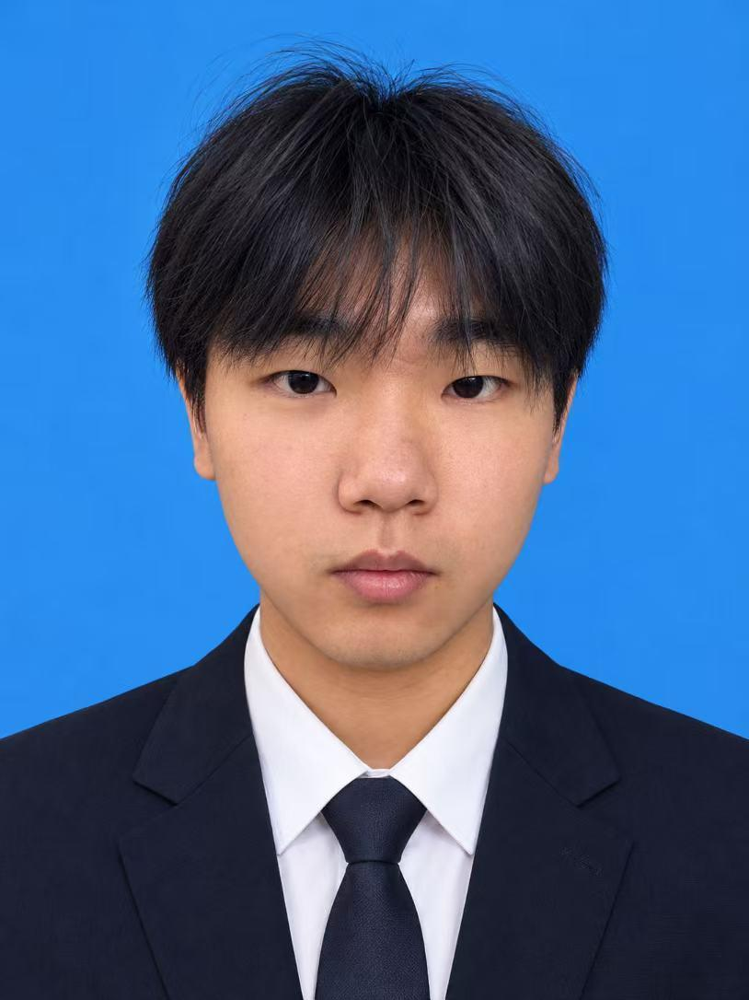

PROJECT 01 · AIGC 微短剧
《一灯渡众生》
以传统文化为母题，将完整故事拆解为 54 个可执行镜头，并建立盛唐长安的统一视觉规范。
- 角色短片导演 / 生成统筹 / 剪辑后期
- 方法参考图、首尾帧、提示词与版本筛选协同
- 交付约 3 分 20 秒成片，完成赛事投稿
AIGC VIDEO CREATOR · CHENGDU
我是郭佳鑫，数字媒体艺术本科在读。关注从脚本拆解、视觉设定、镜头生成到剪辑交付的完整链路， 也保留真人拍摄中对人物、空间与节奏的判断。
01 / SELECTED WORK
从重点项目到多类型实践，展示创意如何被拆解、验证，再成为可以交付的画面。
PROJECT 01 · AIGC 微短剧
以传统文化为母题，将完整故事拆解为 54 个可执行镜头，并建立盛唐长安的统一视觉规范。
PROJECT 02 · 文创策划
把茶叶、叶脉与自然意象转化为品牌概念，统筹茶罐、明信片、雨伞与展板，并规划扫码进入数字内容的跨媒介体验。
PROJECT 03 · 剧情短片
承担导演、编剧、摄影及后期，以人物关系和空间条件组织景别、机位与现场调度，完成约 5 分钟校园剧情短片。
PROJECT 04 · 视觉系统
从宽窄巷子、杜甫草堂、武侯祠、大熊猫基地与金沙遗址提炼识别元素，建立统一构图、字体、色彩和版式规范。
PROJECT 05 · 官方宣传
围绕作品展示、师生采访与现场氛围拆解内容，完成采访沟通、现场调度、影像采集与叙事剪辑。
02 / WORKFLOW
生成不是终点。把每一阶段留下的判断，变成下一阶段可复用的约束。
明确人物行动、情绪节奏与镜头衔接，把文本转译为可执行的镜头任务。
固定角色、服饰、色彩、空间与核心道具，先定义世界，再开始批量生成。
组合参考图、首尾帧和提示词，筛选版本并逐镜解决重复、错位、跳变与漂移。
以叙事为准重组素材，完成节奏、字幕、声音、合成与最终校对。

GUO JIAXIN · 郭佳鑫
03 / ABOUT
现就读于成都美术学院数字媒体艺术专业，综合排名年级第四，获校级二等奖学金。 我的训练横跨生成式影像、真人拍摄、剪辑后期与视觉设计，希望在真实项目里继续提升镜头控制与内容表达。
AIGC 影像制作
导演与分镜
剪辑与成片交付
视觉与数字内容设计
ChatGPT · Codex · 即梦
Workbody Cloud
Photoshop · Illustrator
剪映